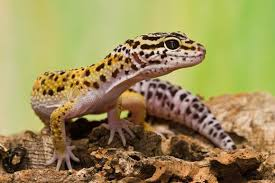

leopard gecko
홈으로 Leopard Gecko (Eublepharis macularius) The leopard gecko (Eublepharis macularius) lizard has been captive bred in the United States for more than 30 years and is one of the most commonly kept lizards today. These hardy saurians come in a variety of colors, patterns and sizes. This is a great species for the home. Imagine a lizard that can vocalize and wash an eye with its tongue with ease. There is a friendly dinosaur in this small package.
Leopard Gecko Availability Captive-bred leopard geckos can be found in pet stores, at reptile shows and on the Internet. Many breeders have websites where you can learn about, s elect and purchase healthy leopards, which range in price from $20 to $3,000. There is a huge collector market worldwide for the rarer variations of leopard geckos.